1
Otevřete hru
Na tomhle webu, v mobilu. Nic se neinstaluje. Jeden telefon na partu stačí, ostatní hledají a radí.
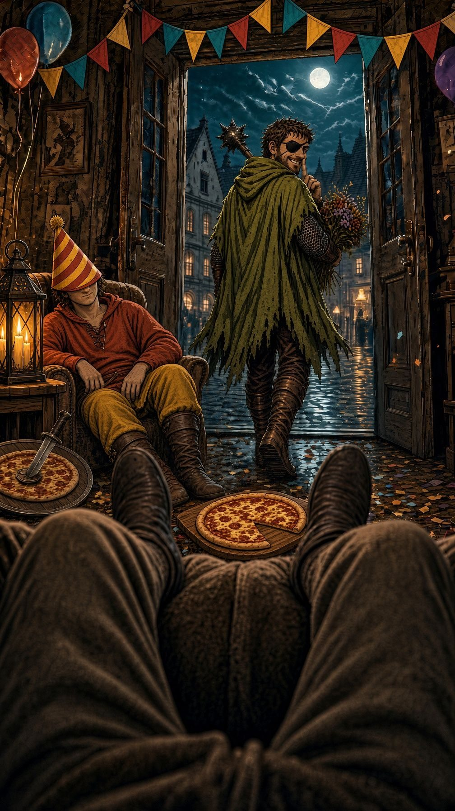
Žižka se v poledne žení.
A je pryč.
Úniková hra bez místnosti: hraje se v ulicích Tábora, vede vás chat v mobilu. Parta 1–6 lidí, 9 míst, zhruba 90 minut.
Žádná rezervace, žádný herec, žádný zámek na dveřích. Hádanky jsou schované tam, kde je Žižka v noci nechal: na kašně, na fasádě, v dlažbě. Mobil vám říká, kam jít a co hledat. Odpovědi najdete očima.
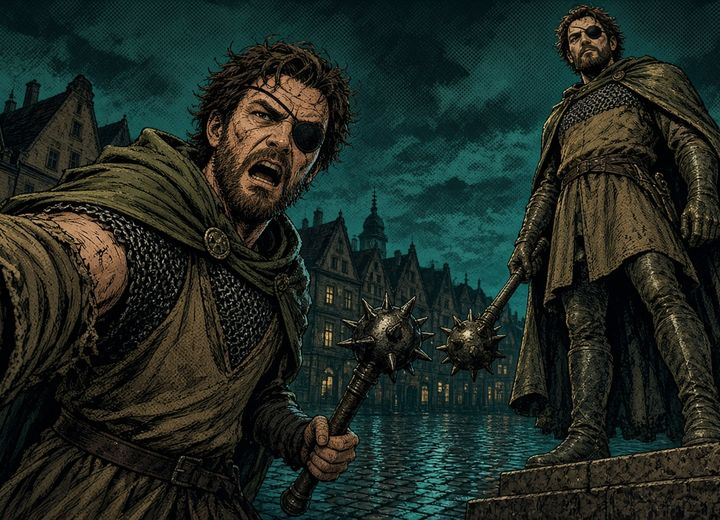
Devět skutečných míst v centru. Každé skrývá jednu hádanku, kterou vyřešíte jen na místě.
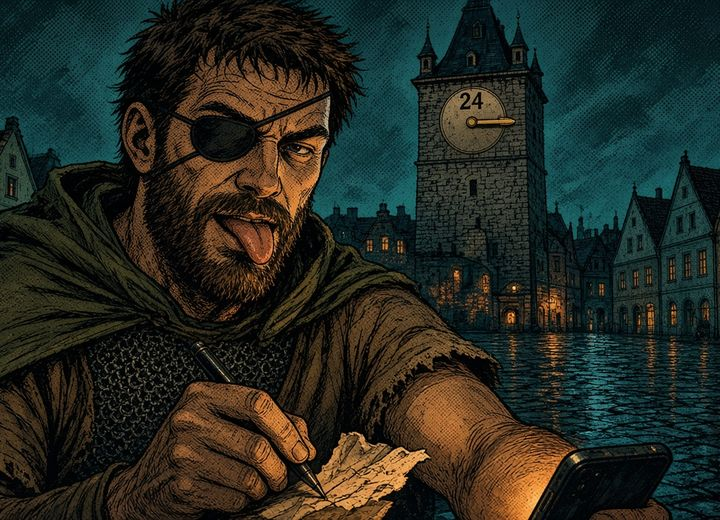
Píše vám do chatu, jako by to bylo doopravdy. Žižkovy zprávy z noci chodí se zpožděním, jak jdete po jeho stopách.
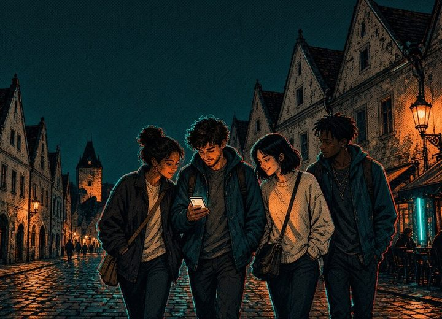
Ztratili jste ženicha a máte ho do poledne najít. Co s ním uděláte, až ho najdete, je na vás. Konce jsou tři.
Šest kroků. Posuňte prstem.
Na tomhle webu, v mobilu. Nic se neinstaluje. Jeden telefon na partu stačí, ostatní hledají a radí.
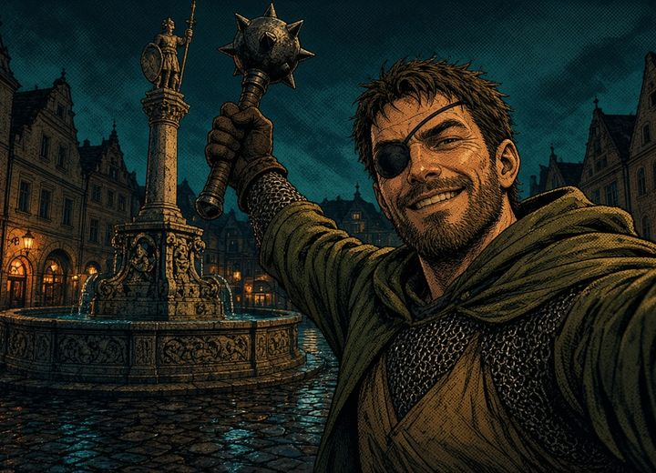
Start je u kašny s Rolandem na Žižkově náměstí. Kdykoli ve dne, v každém ročním období.
Nevěsta vám napíše do chatu: ženich zmizel, rozlučka byla vaše akce, tak ho najděte. Do poledne.
Devět míst, devět hádanek, nápovědy na každém. Za vyřešení groše do svatební kasy, za nápovědu z ní.
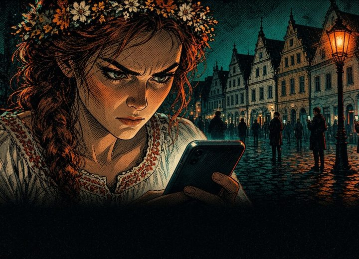
Najdete ho. Povoz s nevěstou je za rohem a vy máte osm minut rozhodnout, jak to dopadne.
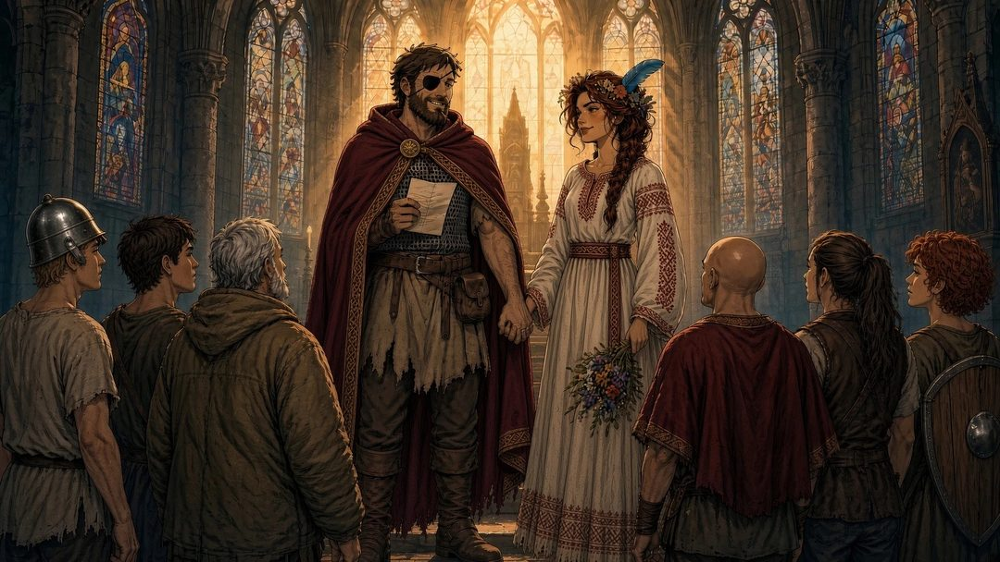
Obrázek s vaším koncem, dopsaným slibem, časem a skóre. Pošlete ho do skupiny a zapíšeme vás do žebříčku.
společného programu, u kterého se parta hádá, směje a nekouká každý do svého mobilu
v Táboře, která znáte z průchodu, a teď uvidíte, co na nich je
a slib, který Žižka dopíše s vaší pomocí. Druhý konec si koupíte za groše.
na konci: váš konec, čas, skóre a místo na hostině. Do skupiny a do žebříčku.
Sobota, 9:30. Včera jste byli Žižkova rota. Dnes se probouzíte s hlavou jak střep, obřad je v poledne a ženich nikde. Nevěsta se právě nabourala do vašeho chatu.
Humor je pro 15+. Žižka nepřednáší dějepis. Ale leccos se dozvíte.
Každá vyřešená hádanka otevře jedno okénko z Žižkovy noci. Dvě vidíte. Zbytek si zasloužíte.
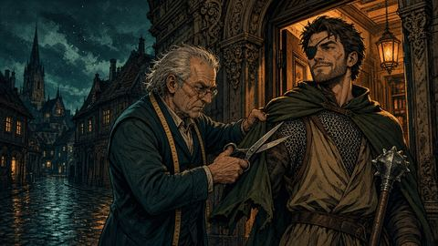
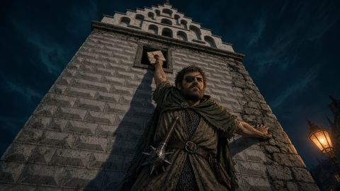
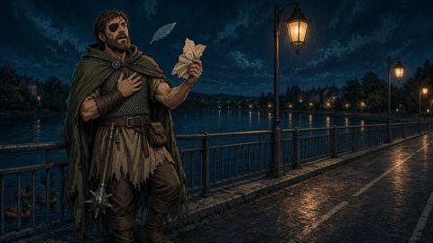
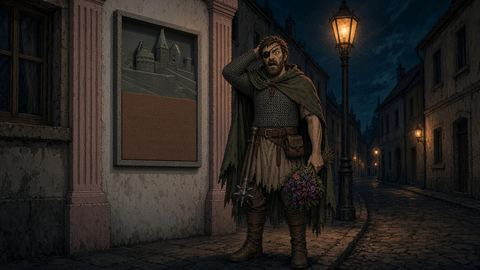
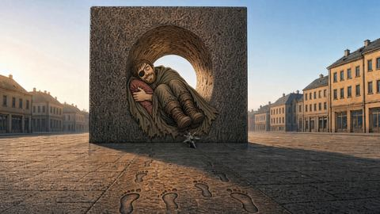
Na konci hry dostanete kartu se skóre. Pošlete ji nám a zapíšeme vás sem. Jméno roty si vymyslíte sami.
Rychlá rota s nápovědami a pomalá bez nich tak mohou skončit stejně. Vyhrává ta, která je chytrá i rychlá.
Ženich zmizel, vy ho hledáte a nevěsta vám vyhrožuje popravou. Program na dopoledne po pařbě, který si sedne.
„Kdo nic, myje kotle.“Hádanky, u kterých se hádáte, kdo má pravdu, a hlášky, které si budete připomínat ještě v hospodě.
„Nejste tak blbí, jak vypadáte.“Devadesát minut Táborem, na konci slib, který Žižka dopíše s vaší pomocí. Ne každé rande má tři konce.
„…To bylo hezký. To bych od něj nečekala.“Centrum jinak než s průvodcem: kašna, radnice, pomník, Jordán, Brána času. Fakt je odměna, ne přednáška.
„Stojí tu 400 let a drží slovo.“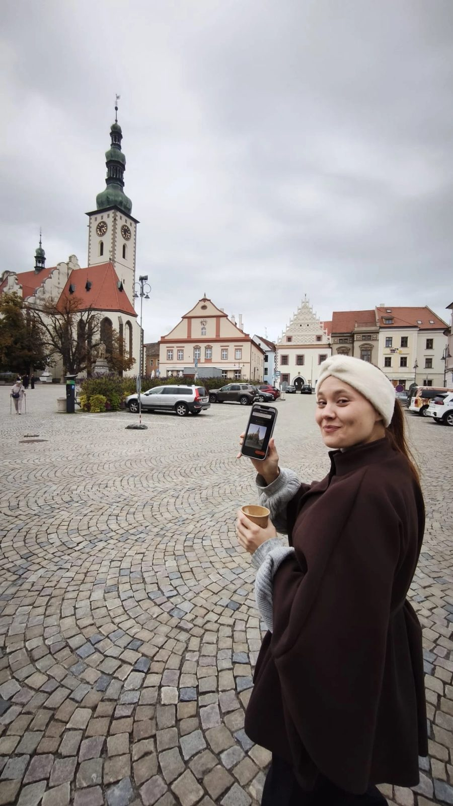
Hádanky akorát.
Konec s Bránou času dobrý.
Na deset by to chtělo víc animací.
Testerka po první hře 12. 10. Od té doby se dopisovalo, přepisovalo a zkoušelo. Dohrála za hodinu, protože trasu znala. Počítejte s devadesáti minutami a s tím, že se u pomníku pohádáte, kdo točí kterým kotoučem.
za celou partu 1–6 lidí · jedna hra · bez aplikace
Hra právě vyšla a první party hrají zdarma. Za to chceme jediné: napište nám pak dvě věty, co bylo dobré a co ne.
Hra se dokončuje. Nechte nám e-mail a dáme vědět, až se otevře první okénko.
Chtěl jsem udělat únikovou hru v Táboře, aby lidi neseděli doma a nekoukali do telefonu. Sám jsem to tak měl, roky, a nemyslím si, že je to dobře.
Tak jsem to otočil: telefon je ve hře jen průvodce, všechno ostatní je venku. Parta, město, hádanky na fasádách. Ne jedna noční akce jednou za rok, ale hra, kterou si zahrajete, kdy máte čas: kdykoli za světla, v zimě i v létě.
Žižkova rozlučka je první díl. Když se vám bude líbit, napište. Když ne, napište i tak.
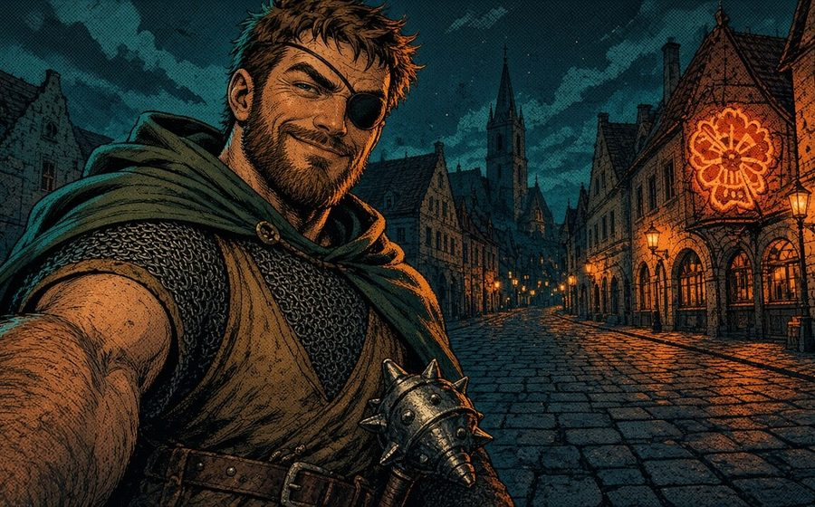
Žižka má v Táboře ještě jeden nevyřízený účet. Další příběh se píše. Kdo ho chce vědět první, ať se ozve.
Ano, jen větší. Místo jedné místnosti máte centrum Tábora, místo zámku na dveřích devět hádanek, které se dají vyřešit jen na místě. Nikdo vás nezamkne a nikdo vás nehlídá. Hra vás vede chatem.
Ano. Hra počítá s tím, že Tábor neznáte. Chat vás vede od místa k místu, na každou cestu máte nápovědu i mapu a nic se nemusíte učit dopředu: všechno, co k hádankám potřebujete, najdete na místě. Za 90 minut projdete celé historické centrum. Start je u kašny na Žižkově náměstí, od vlakového nádraží asi 20 minut pěšky.
Ano. Znalost města vám pomůže s cestou, ne s hádankami. Ty jsou schované ve věcech, kolem kterých chodíte každý den a nevšímáte si jich: v letopočtech, nápisech a detailech na fasádách. Žebříček je stejný pro všechny, takže uvidíte, jestli jste rychlejší než party odjinud.
Hraje se venku, počasí berete, jak přijde. V dešti se hůř ovládá mobil, pomůže pouzdro nebo obyčejný sáček. Když leje nebo klouže, hru odložte. Hra si pamatuje, kde jste skončili.
Radši ne. Skoro každý úkol stojí na tom, co vidíte na fasádách, na kašně a v dlažbě, a to se po setmění špatně čte. V říjnu se stmívá kolem půl sedmé, vyrazte nejpozději ve čtyři. V listopadu je tma už kolem půl páté.
Ne. Příběh se točí kolem jedné divoké noci, ale pít u toho nemusíte. Ve hře se pije jedině voda z pítka na Tržním náměstí.
Humor je pro 15+: kocovina, rozlučka a nevěsta, která vyhrožuje popravou. Rodinnou verzi zatím nemáme.
Není. Na trase je kopec k Jordánu a zpátky do centra a jedna úzká ulička. S kočárkem nebo na vozíku ji nedoporučujeme.
Na každém místě máte nápovědy. Ta poslední řekne rovnou řešení, takže nikde nezůstanete stát. Nápověda stojí pár grošů ze svatební kasy, nic víc.
Jen pro žebříček: počítá se od otevření chatu do konce. Nikdo vás nehoní, pauza na kafe je dovolená, jen se připočte. Kdo o žebříček nestojí, čas ignoruje.
Stačí jeden nabitý mobil s mobilními daty. Hra se načte najednou, zhruba 4 MB, pak už skoro nic nestahuje. Kdo cestou fotí, ať přibalí powerbanku.
Jedna parta o 1–6 lidech. Hraje se z jednoho telefonu, ostatní hledají, luští a radí. Větší parta se rozdělí na dvě a soutěží o skóre.
12 měsíců od zaplacení, na jedno odehrání. Kdy vyrazíte, je na vás.
Přístup ke hře dostanete hned po zaplacení, proto na něj ze zákona neplatí 14 dní na rozmyšlenou. Když ale hra nefunguje nebo jste ji nezačali hrát, napište nám a peníze vrátíme. Podrobnosti v obchodních podmínkách.
Hra nic neukládá na server. Postup, groše i zvolený konec zůstávají ve vašem telefonu. Web nemá žádné sledování ani cookies. Podrobnosti v ochraně soukromí.